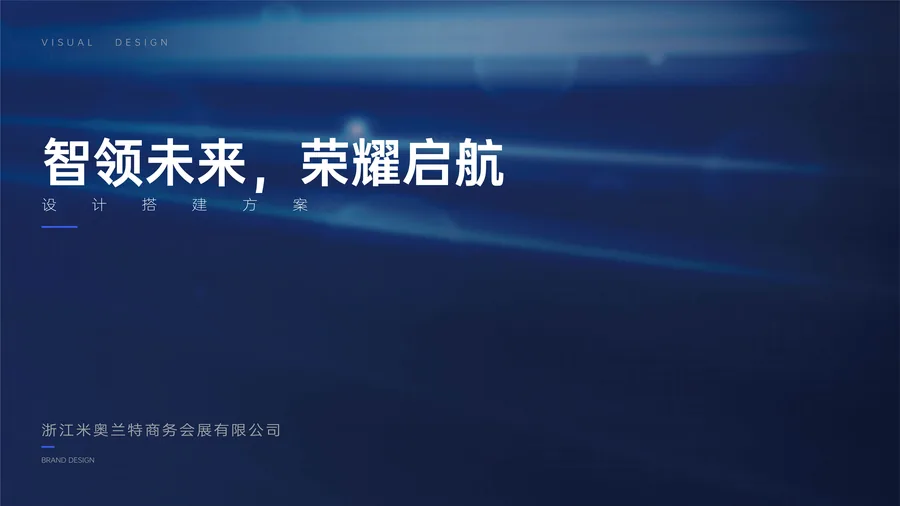
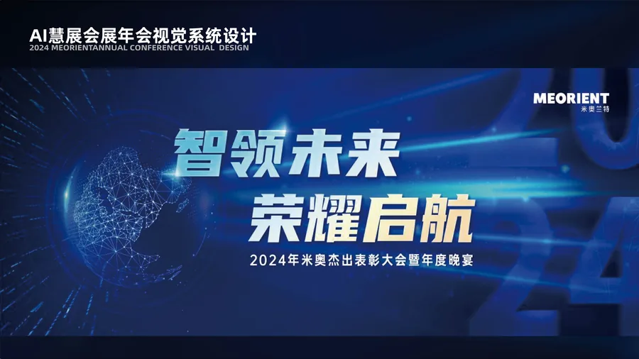
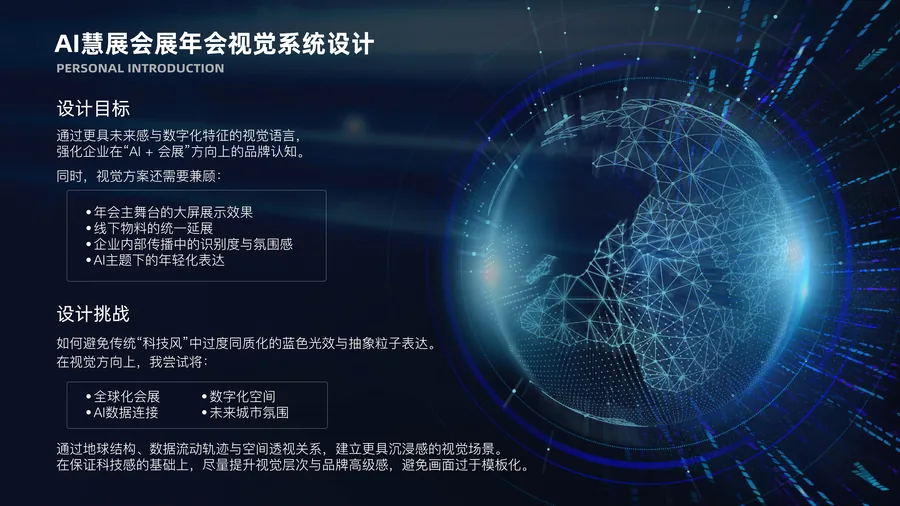
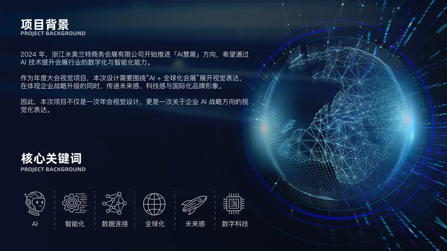
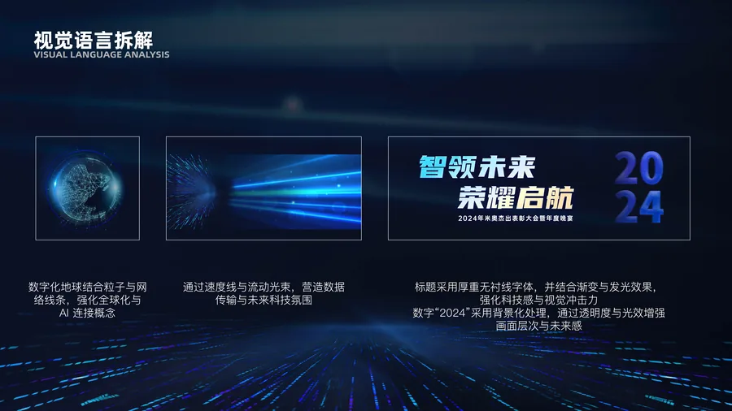
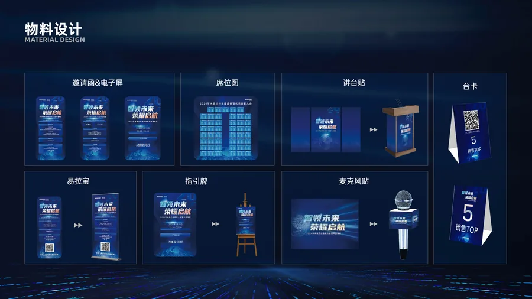
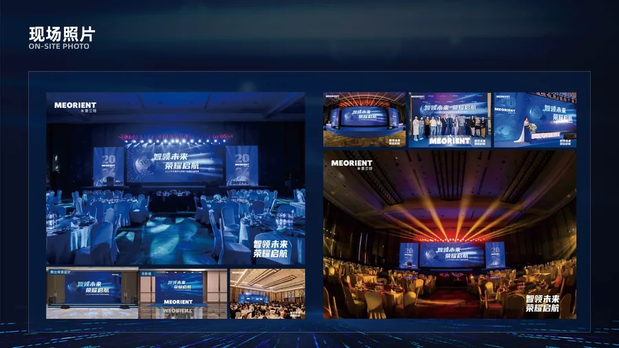

2024年，浙江米奥兰特商务会展股份有限公司开始推进「AI慧展」方向，希望通过AI技术提升会展行业的数字化与智能化能力。作为年度大会视觉项目，本次设计需要围绕「AI + 全球化会展」展开视觉表达，在体现企业战略升级的同时，传递未来感、科技感与国际化品牌形象。
通过更具未来感与数字化特征的视觉语言，强化企业在「AI + 会展」方向上的品牌认知。同时，视觉方案还需要兼顾：年会主舞台的大屏展示效果、线下物料的统一延展、企业内部传播中的识别度与氛围感、AI主题下的年轻化表达。
如何避免传统「科技风」中过度同质化的蓝色光效与抽象粒子表达。在视觉方向上，我尝试将：全球化会展、数字化空间、AI数据连接、未来城市氛围，通过地球结构、数据流动轨迹与空间透视关系，建立更具沉浸感的视觉场景。在保证科技感的基础上，尽量提升视觉层次与品牌高级感，避免画面过于模板化。
完成全套活动物料设计：邀请函及电子屏、席位图、讲台贴、台卡、易拉宝、指引牌、麦克风贴。以及舞台背景大屏设计和合影墙的设计落地。华南与华东两地三屏联动，确保线上线下视觉统一。






